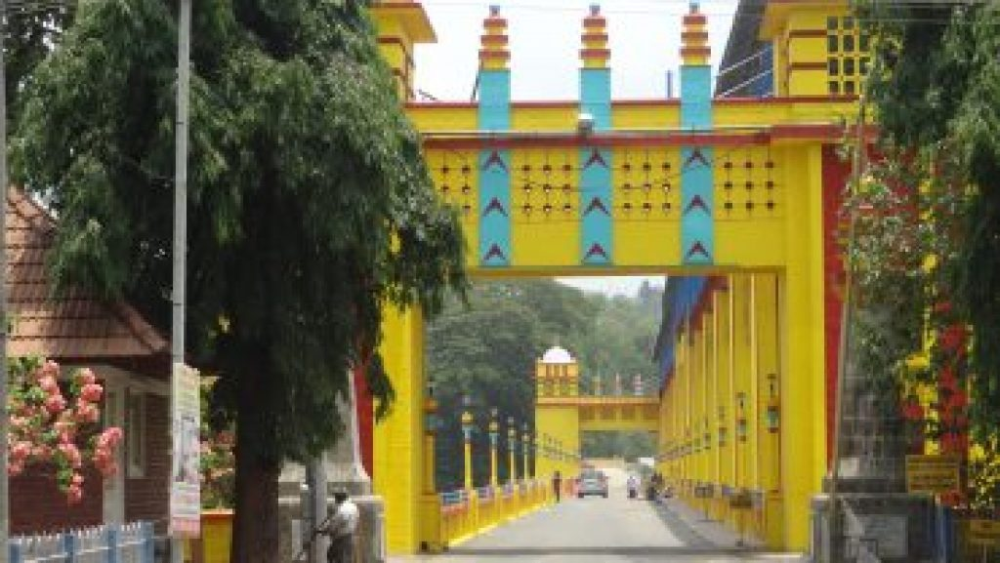

ERNAKULAM
Major Tourist Destinations
There are several destinations to visit in Ernakulam.Major destinations to visit are:
1. Edapally Church

Edappally, about 10 km away from the city, is famous for the St. George Forane Church, one of the oldest Roman Catholic Churches in the State. The church, popularly known as Edappally Pally, was a small structure at the time of its construction in 594 AD. In 1080 AD, a bigger church was built adjacent to the old one to accommodate the congregation that had grown greatly in number. The Edappally pilgrim church was the richest Catholic shrine in Kerala. Due to the uncountable miracles of Edappally St George, the Catholic Church were deciding to elevate this miraculous Church to the status of a National Shrine Basilica.
2. Bolgatty Palace

This is the oldest palace built by the Dutch outside the Kingdom of Holland. The palace was built by a Dutch merchant in 1744. Later, it was renovated with a magnificent lawn and a number of reforms. The palace served as the official residence of Dutch Governor.
3. Mangalavanam Bird Sanctuary

Mangalavanam Bird Sanctuary is a bird sanctuary in the city of Palakkad district of Kerala state in India.It is located in the heart of Kochi city and has an area of 0.0274 sq km. A large number of migratory birds visit this place. Spiders and bats are the main attractions here. The Mangalavanam Bird Sanctuary which was established in 2004 is the smallest protected area under the state forest department. It is the only bird sanctuary in Kerala which is located in Mangrove forests. The word Mangal means mangroves in Portuguese. A survey conducted in May 2006 found that there are 194 birds in 32 species. The number of bird species recorded so far from this area is 72. In addition, 17 species of butterflies are recorded here. There are 51 different types of spiders
4. Hill Palace

Hill Palace, built in 1865, is the largest archaeological museum in Kerala and the administrative center of Cochin. The palace consists of 49 buildings in the local style of 54 acres and includes the Hill Palace Archaeological Museum, Heritage Museum, Deer Park, Prehistoric Park and Children’s Park. There are many medicinal plants around the palace. The Museum Hill Palace is now open to the public for days on Mondays. The Hill Palace is located at a distance of 14 km from Kochi. Hill Palace was built in 1865 by the Maharaja Of Cochin using his personal wealth.
5. Fort Kochi

Fort Kochi, the western part of the Kochi city of Ernakulam district in Kerala. It is about 12 km away from Ernakulam Town. Fort Kochi has played an important role in the history of Kerala. Fort Kochi also has several attractions like the Santa Cruz Basilica. Fort Kochi also houses many historical monuments such as the St. Francis Church, the first church of Vasco da Gama, the Dutch Seminary, the China Vela and many others. The Indian Navy’s ship, Dronacharya, is located in Fort Kochi.
6. Bhoothathaankettu

Scenic dam site with boating facilities is situated in a vast virgin forest. It is a popular picnic sport with Salim Ali Bird Sanctuary near by.